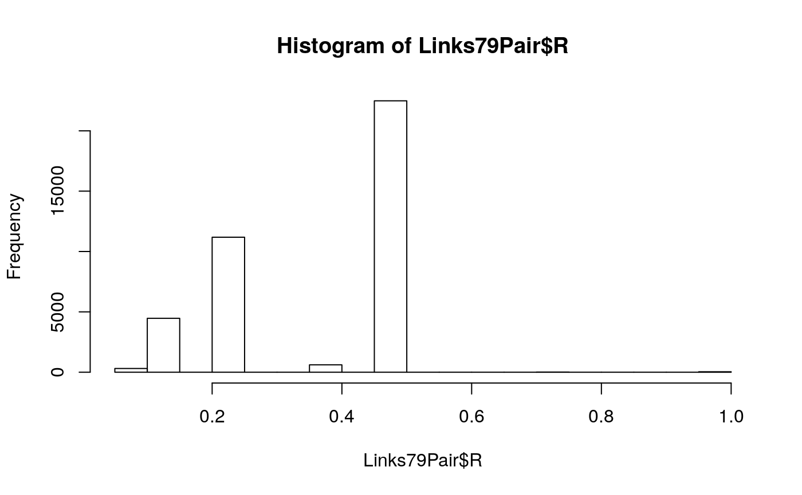

R/links-79-pair-doc.R
Links79Pair.RdThis dataset specifies the relatedness coefficient (ie, 'R') between
subjects in the same extended family. Each row represents a unique
relationship pair.
NOTE: Two variable names changed in November 2013. Subject1Tag and Subject2Tag became SubjectTag_S1 and SubjectTag_S2.
A data frame with 42,773 observations on the following 5 variables. There is one row per unique pair of subjects, irrespective of order.
ExtendedID Identity of the extended family of the pair; it corresponds to the HHID in the NLSY79. See References below.
SubjectTag_S1 Identity of the pair's first subject. See Details below.
SubjectTag_S2 Identity of the pair's second subject. See Details below.
R The pair's Relatedness coefficient. See Details below.
RelationshipPath Specifies the relationship category of the pair. This variable is a factor, with levels Gen1Housemates=1, Gen2Siblings=2, Gen2Cousins=3, ParentChild=4, AuntNiece=5.
Gen1 information comes from the Summer 2013 release of the NLSY79 sample. Gen2 information comes from the Summer 2013 release of the NLSY79 Children and Young Adults. Data were extracted with the NLS Investigator (https://www.nlsinfo.org/investigator/).
The internal version for the links is Links2011V84.
The dataset contains Gen1 and Gen2 subjects. "Gen1" refers to subjects in the original NLSY79 sample (http://www.bls.gov/nls/nlsy79.htm). "Gen2" subjects are the biological children of the Gen1 females -ie, those in the NLSY79 Children and Young Adults sample (http://www.bls.gov/nls/nlsy79ch.htm).
Subjects will be in the same extended family if either:
they are Gen1 housemates,
they are Gen2 siblings,
they are Gen2 cousins (ie, they have mothers who are Gen1 sisters in the NLSY79,
they are mother and child (in Gen1 and Gen2, respectively), or
they are aunt|uncle and niece|nephew (in Gen1 and Gen2, respectively).
The variables SubjectTag_S1 and SubjectTag_S2 uniquely identify
subjects. For Gen2 subjects, the SubjectTag is identical to their CID (ie,
C00001.00 -the SubjectID assigned in the NLSY79-Children files). However
for Gen1 subjects, the SubjectTag is their CaseID (ie, R00001.00), with
"00" appended. This manipulation is necessary to identify subjects
uniquely in inter-generational datasets. A Gen1 subject with an ID of 43
has a SubjectTag of 4300. The SubjectTags of her four children
remain 4301, 4302, 4303, and 4304.
Level 5 of RelationshipPath (ie, AuntNiece) is gender neutral. The
relationship could be either Aunt-Niece, Aunt-Nephew, Uncle-Niece, or
Uncle-Nephew. If there's a widely-accepted gender-neutral term, please
tell me.
An extended family with \(k\) subjects will have \(k\)(\(k\)-1)/2 rows. Typically, Subject1 is older while Subject2 is younger.
MZ twins have R=1. DZ twins and full-siblings have R=.5.
Half-siblings have R=.25. Typical first cousins have R=.125.
Unrelated subjects have R=0 (this occasionally happens for
Gen1Housemates, but never for the other paths).
Other R coefficients are possible.
There are several other uncommon possibilities, such as half-cousins (R=.0625) and
ambiguous aunt-nieces (R=.125, which is an average of 1/4 and 0/4).
The variable coding for genetic relatedness,R, in Links79Pair contains
only the common values of R whose groups are likely to have stable estimates.
However the variable RFull in Links79PairExpanded contains all R values.
We strongly recommend using R in this base::data.frame. Move to
RFull (or some combination) only if you have a good reason, and are willing
to carefully monitor a variety of validity checks. Some of these
excluded groups are too small to be estimated reliably.
Furthermore, some of these groups have members who are more strongly genetically related than their
items would indicate. For instance, there are 41 Gen1 pairs who explicitly claim they are not biologically related
(ie, RExplicit=0), yet their correlation for Adult Height is r=0.24. This is
much higher than would be expected for two people sampled randomly; it is nearly identical to
the r=0.26 we observed among the 268 Gen1 half-sibling pairs who claim they share exactly 1
biological parent.
The NLSY79 variable HHID (ie, R00001.49) is the source for the
ExtendedID variable. This is discussed at
http://www.nlsinfo.org/nlsy79/docs/79html/79text/hhcomp.htm.
For more information on R (ie, the Relatedness coefficient), please see Rodgers, Joseph Lee, & Kohler, Hans-Peter (2005). Reformulating and simplifying the DF analysis model. Behavior Genetics, 35 (2), 211-217.
The LinksPair79 dataset contains columns necessary for a
basic BG analysis. The Links79PairExpanded dataset contains
further information that might be useful in more complicated BG analyses.
A tutorial that produces a similar dataset is http://www.nlsinfo.org/childya/nlsdocs/tutorials/linking_mothers_and_children/linking_mothers_and_children_tutorial.html. It provides examples in SAS, SPSS, and STATA.
The current dataset (ie, Links79Pair) can be saved as a CSV file
(comma-separated file) and imported into in other programs and languages.
In the R console, type the following two lines of code:
library(NlsyLinks)
write.csv(Links79Pair, "C:/BGDirectory/Links79Pair.csv")
where "C:/BGDirectory/" is replaced by your preferred directory.
Remember to use forward slashes instead of backslashes; for instance, the
path "C:\BGDirectory\Links79Pair.csv" can be misinterpreted.
library(NlsyLinks) # Load the package into the current R session. summary(Links79Pair) # Summarize the five variables.#> ExtendedID SubjectTag_S1 SubjectTag_S2 R #> Min. : 2 Min. : 200 Min. : 201 Min. :0.062 #> 1st Qu.: 3045 1st Qu.: 304500 1st Qu.: 304504 1st Qu.:0.250 #> Median : 5976 Median : 597602 Median : 598001 Median :0.500 #> Mean : 5830 Mean : 583280 Mean : 584537 Mean :0.381 #> 3rd Qu.: 8422 3rd Qu.: 842202 3rd Qu.: 844503 3rd Qu.:0.500 #> Max. :12675 Max. :1267500 Max. :1267501 Max. :1.000 #> NA's :3674 #> RelationshipPath #> Gen1Housemates: 5302 #> Gen2Siblings :11088 #> Gen2Cousins : 4995 #> ParentChild :11504 #> AuntNiece : 9884 #> #>hist(Links79Pair$R) # Display a histogram of the Relatedness coefficients.table(Links79Pair$R) # Create a table of the Relatedness coefficients for the whole sample.#> #> 0.0625 0.125 0.25 0.375 0.5 0.75 1 #> 309 4465 11183 610 22482 12 38#Create a dataset of only Gen2 sibs, and display the distribution of R. gen2Siblings <- subset(Links79Pair, RelationshipPath=='Gen2Siblings') table(gen2Siblings$R) # Create a table of the Relatedness coefficients for the Gen2 sibs.#> #> 0.25 0.375 0.5 0.75 1 #> 3442 610 6997 12 27